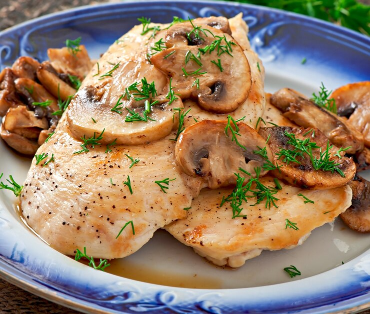

Ingredients
- Chicken breast (butterfly cut)
- balsamic vinagar
- 60g of mushrooms (laminated)
- Two color grinded cheese
- Salt and pepper
Instructions
- Season the chicken breast with salt and pepper and add the vinagar generously
- In a pan heat olive oil then add the mushrooms. Let it cook for a couple of minutes.
- Add the chicken breast. Let it cook for a bit then turn it over and pulverize with the cheese.
- Turn off the heat, add a lid and let the steam melt the cheese.
Done!
It is now ready to be served. To keep zero carbs on the meal, you can acompany it with a tomato and oregano salad.